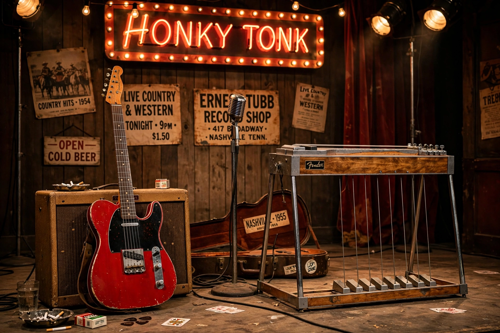

Bakersfield sound

| Bakersfield sound | |
|---|---|
| Stylistic origins | Honky-tonk, Western swing, rock and roll |
| Cultural origins | 1950s, Bakersfield, California |
| Typical instruments | Fender Telecaster, pedal steel guitar, fiddle, drums |
| Key artists | Buck Owens, Merle Haggard, Tommy Collins, Wynn Stewart, Red Simpson |
The Bakersfield sound is a subgenre of country music that developed in and around Bakersfield, California, in the mid-1950s and 1960s. Created largely by Dust Bowl migrants from Oklahoma, Texas and Arkansas who had settled in California's Central Valley, it was a raw, electric reaction against the lush, string-laden Nashville sound then dominant in country music.
Characteristics
The Bakersfield sound features twangy Fender Telecaster electric guitars, prominent pedal steel guitar, fiddle, a driving backbeat borrowed from rock and roll, and high, lonesome vocals singing plainspoken lyrics about working-class life — honky-tonks, trucking, drinking, love and loss. Recordings were typically dry and unadorned compared with Nashville's orchestral productions.
History
Bakersfield's honky-tonk scene flourished along Edison Highway in clubs such as the Blackboard Café. Wynn Stewart and Tommy Collins were early architects of the style. It achieved national fame through Buck Owens and his band the Buckaroos, whose hits beginning with "Act Naturally" (1963) and "I've Got a Tiger by the Tail" (1964) defined the sound, and through Merle Haggard, a former San Quentin inmate from Bakersfield whose songs included "Mama Tried" and "Okie from Muskogee". Owens co-hosted the television show Hee Haw from 1969, and his Buck Owens Crystal Palace remains a Bakersfield landmark.
Influence
The Bakersfield sound influenced the Beatles (who covered "Act Naturally"), the Rolling Stones' country excursions, the Flying Burrito Brothers and Gram Parsons, and later artists such as Dwight Yoakam — who revived the style in the 1980s and championed Owens — as well as the broader Americana and alt-country movements. It is regarded, along with the outlaw country movement, as a key renewal of honky-tonk tradition within mainstream country.